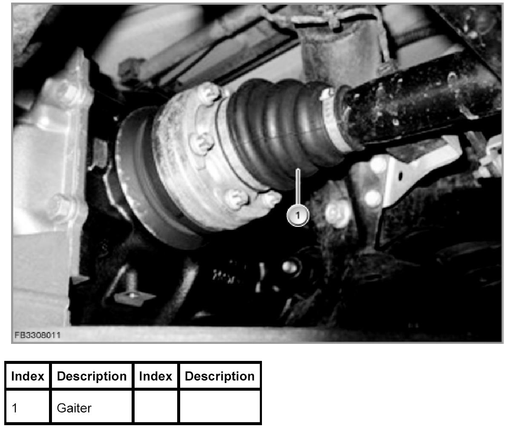
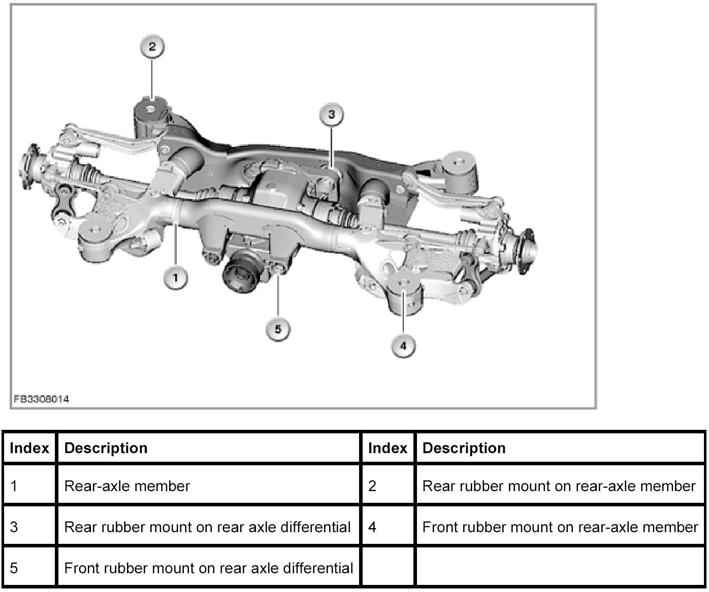
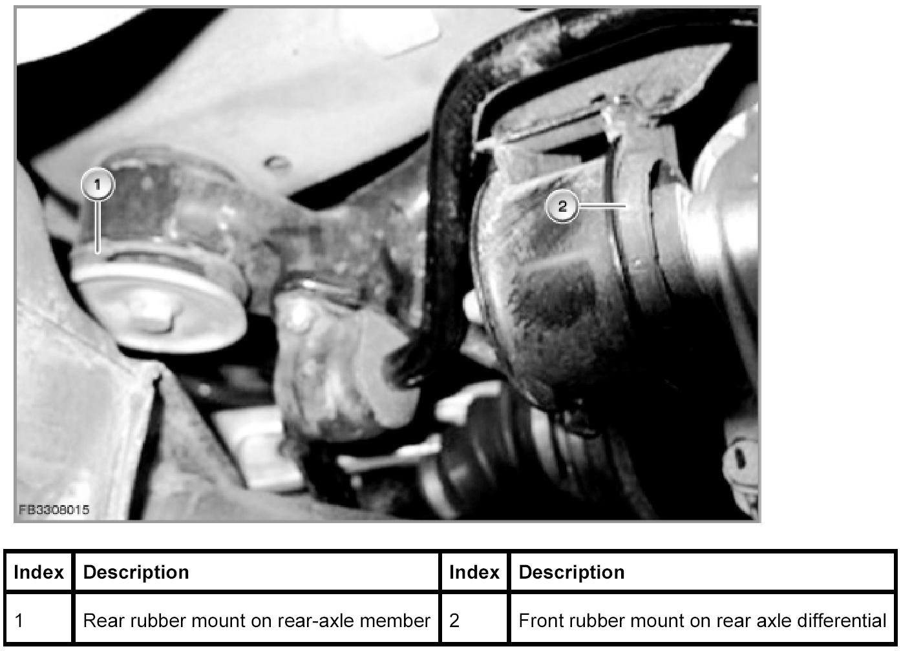
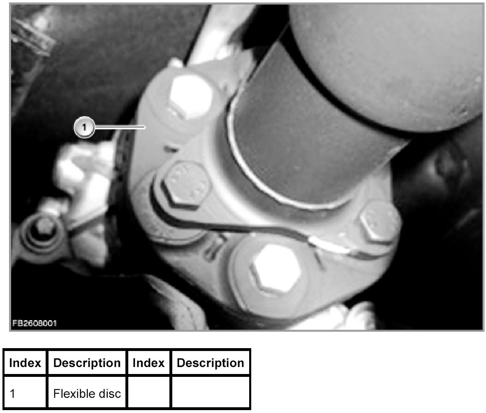
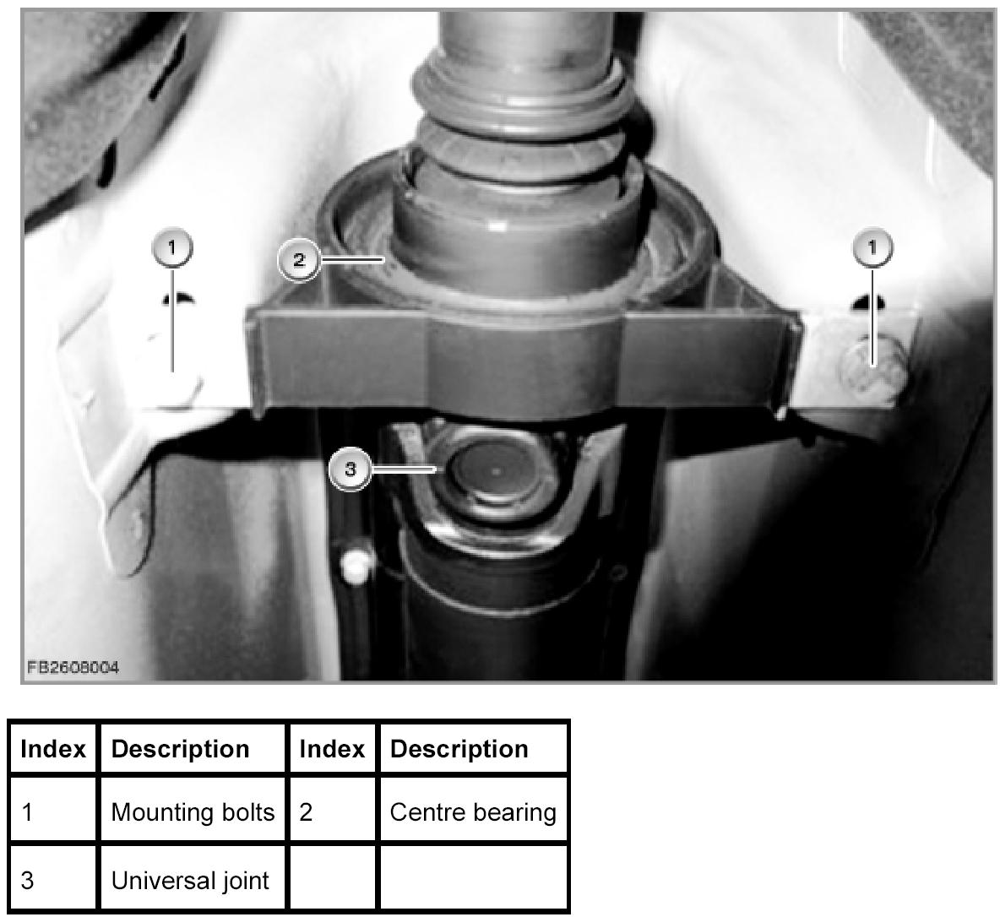

Banging noises during load change
Knocking Due To Change In Engine Load From The Area Of The Rear Axle
The following list shows all the currently known causes of faults that can lead to knocking due to change in engine load in the area of the rear axle.
Knocking due to change in engine load from the area of the rear axle
Run a visual and/or function check on the basis of the list and sample illustrations below. Determine the fault cause on the vehicle and enter the fault code in the keypad field in the next test step. After entering the fault code, the repair instructions are displayed.
No Cause
1 Gaiter on the driveshaft or output shaft loose or damaged
2 Screws on the drive train loose or tightened without correct torque
3 Rubber mounts on the rear axle differential or rear-axle member damaged or torn off
4 Flexible coupling (one-stage or two-stage if fitted) damaged
5 Centre bearing of the driveshaft loose or damaged
Cause of fault 1

Cause of fault 2

Cause of fault 3

Cause of fault 4

Cause of fault 5
